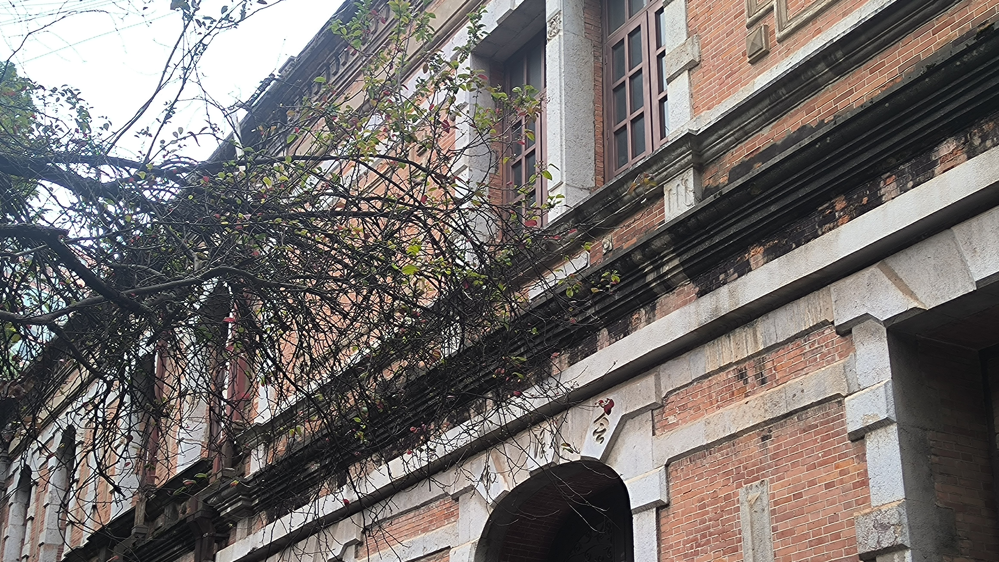
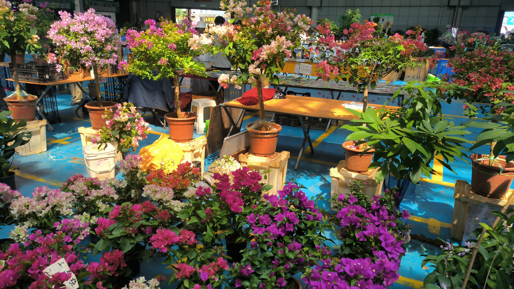
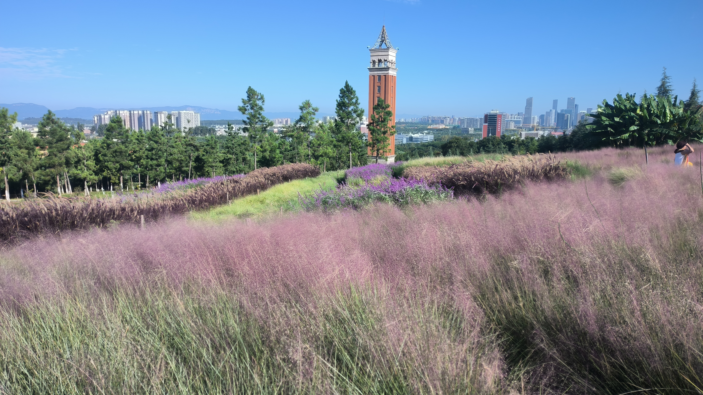
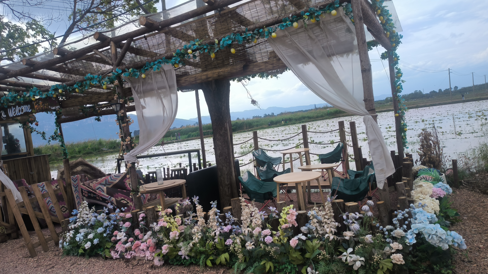
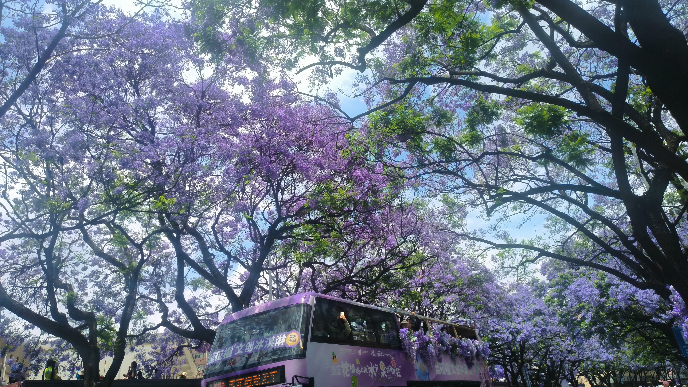
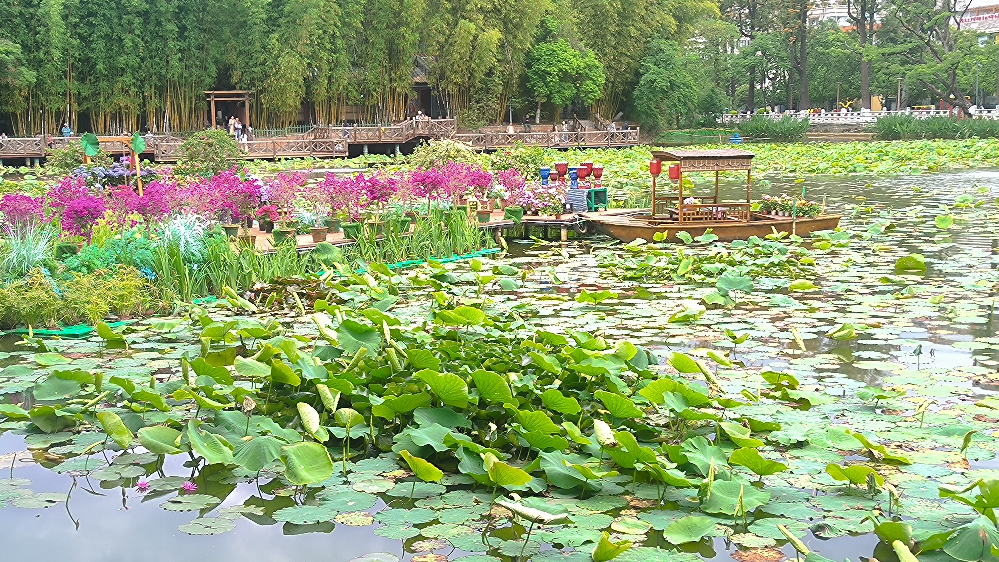
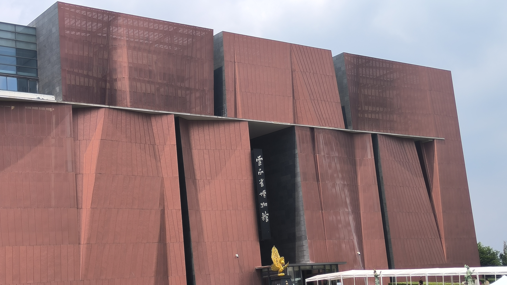
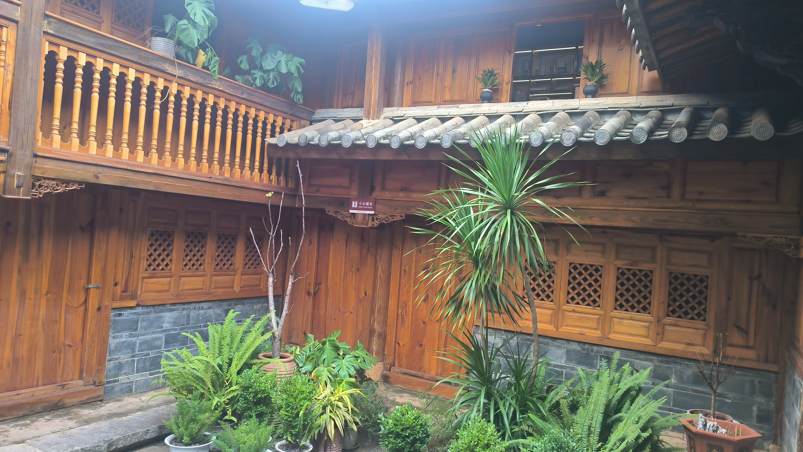

云南大学东陆校区
历史悠久的老校区，会泽院和银杏道特别有味道，秋天来最好看。
昆明四季如春，既有滇池的辽阔，也有老街的烟火气。这里整理了9个我去过的昆明好去处，适合周末慢慢逛。

历史悠久的老校区，会泽院和银杏道特别有味道，秋天来最好看。

亚洲最大的鲜切花市场，花又多又便宜，晚上最热闹，像不要钱一样。

植物种类很多，秋天枫叶红了特别出片，适合散步吸氧。

滇池边的小村子，人少安静，能看滇池日落，很放松。

昆明的蓝花楹大道，五月整条路都是紫色的，拍照特别浪漫。

城中心的小公园，冬天有红嘴鸥，旁边就是文林街，好吃的很多。
滇池边的水杉林，冬天树叶变红，黄昏的时候去最美。

了解云南历史文化的好地方，展品很丰富，免费参观。

昆明老街里的名人故居，安静有味道，适合慢慢逛。